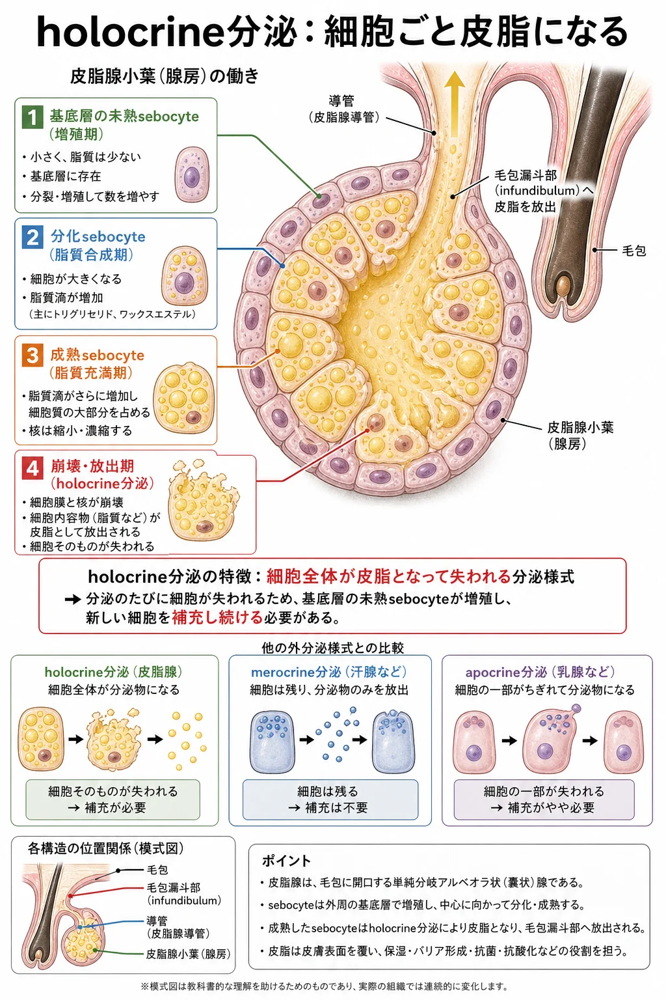
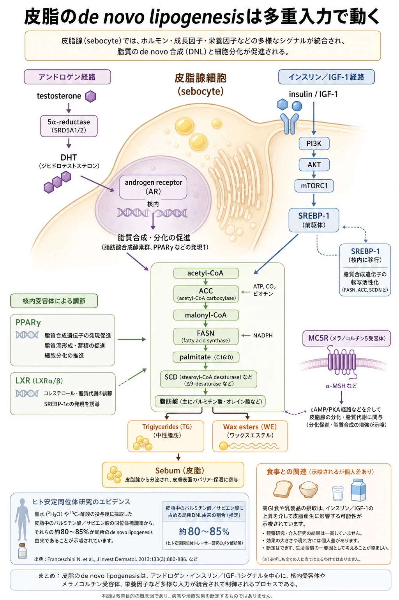
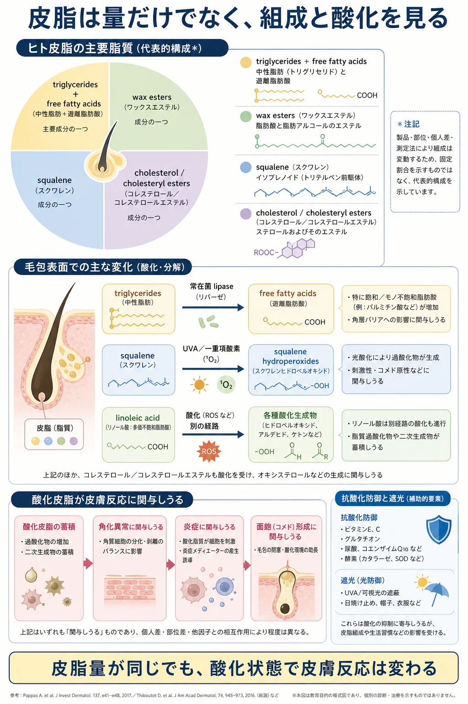

美容皮膚科 ／ 組織の生化学
皮脂分泌の生化学
公開 2026-09-17
皮脂は、皮脂腺で作られ、皮膚の表面に広がる脂質の混合物です。皮膚や毛の表面を覆い、滑らかさを保ちます。また、抗酸化成分であるビタミンEを皮膚の表面へ運ぶ働きもあります。Thieleら, 1999
皮脂の量や組成は、毛包や皮膚表面にすむ常在菌の生育環境に影響します。常在菌も皮脂を分解し、そこで生じる成分や、酸化された脂質が皮膚のバリアや炎症に関わります。
痤瘡や脂漏性皮膚炎では、皮脂・微生物・皮膚の応答が互いに影響します。 痤瘡では皮脂の増加や組成の変化に、毛包の角化異常、C. acnes、炎症が関わります。脂漏性皮膚炎では、皮脂を利用する酵母 Malassezia と、角層バリアや免疫応答との関係が重要です（→ 尋常性痤瘡・脂漏性皮膚炎）。
この章では、皮脂がどのように作られ、その量や組成がどう調節されるかを見ていきます。さらに、分泌後の酸化や常在菌との相互作用を通して、炎症とのつながりを考えます。
この章の一言
皮脂は、皮脂腺の細胞が脂質を蓄え、成熟したあとに崩壊することで分泌されます。 細胞が補充される速さと脂質を作る働きが皮脂量に関わり、分泌後の脂質の変化も皮膚への作用を左右します。
1 皮脂腺の細胞が、皮脂を作って分泌する
皮脂腺の多くは毛包につながり、袋状の小葉が集まった構造をしています。その中にある皮脂腺細胞（sebocyte）が脂質を作ります。分泌された皮脂は、導管から毛包を通り、皮膚の表面に出てきます。
小葉の外周では未熟な細胞が分裂して、新しい細胞を補充しています。細胞は内側へ移動しながら成熟し、細胞内に脂質滴を蓄えます。やがて細胞そのものが崩壊し、蓄えた脂質と細胞の内容物が放出されます。この分泌の仕方を全分泌（holocrine分泌）と呼びます。

ヒトの皮脂腺で細胞の更新を追った研究では、分裂から崩壊まで約21〜25日と報告されています。所要時間は小葉の大きさなどによって異なります。Plewigら, 1974
細胞の補充と脂質の蓄積が、皮脂量に関わる
皮脂の分泌は、新しい細胞が補充され、成熟して脂質を蓄え、最後に内容物を放出することで続きます。皮脂量を考えるには、どれだけの細胞が分泌に至るかと、各細胞がどれだけ脂質を蓄えているかの両方を見る必要があります。
細胞の増殖・成熟が変われば、分泌に至る細胞の数や時期が変わります。脂質の合成・分解が変われば、細胞内に蓄積する脂質量も変わります。皮脂腺の大きさには、細胞数と、それぞれの細胞の大きさが関わります。
2 皮脂を作る働きは、何によって調節されるか
皮脂腺の細胞の増殖・分化と、脂質を作る働きは、アンドロゲンやインスリン・IGF-1などのシグナルによって調節されます。

| シグナル | 皮脂腺での働き | 関連する仕組み |
|---|---|---|
| アンドロゲン | 細胞の増殖・分化や脂質合成を調節する | testosteroneや、5α-reductaseによって作られるDHTがアンドロゲン受容体に結合し、遺伝子発現を調節する |
| インスリン・IGF-1 | 栄養状態や成長に応じて、脂質合成を促す | PI3K–AKT経路などを介して、脂質合成に関わる遺伝子の発現を促す |
| PPARγ・LXRなどの核内受容体 | 分化や脂質代謝を調節する | 脂質に関連するシグナルを受け取り、遺伝子発現を変える |
ヒト皮脂腺細胞の培養研究では、IGF-1がPI3K–AKT経路を介して、脂質合成を調節する転写因子 SREBP-1 の発現と脂質合成を高めました。Smithら, 2008
ちなみに：PPAR・LXRと、ビタミンA・Dの受容体のつながり
PPARやLXRは、RXR（レチノイドX受容体） と二つ一組になり、遺伝子発現を調節します。ビタミンAの活性代謝物であるレチノイン酸（RA）の受容体 RAR、活性型ビタミンDの受容体 VDR も、RXRをパートナーにします。
| 受容体の組み合わせ | 主に関わる調節 |
|---|---|
| PPAR–RXR | 脂肪酸代謝や細胞の分化 |
| LXR–RXR | コレステロールの代謝・輸送や脂質合成 |
| RAR–RXR | レチノイン酸に応じた増殖・分化など |
| VDR–RXR | 活性型ビタミンDに応じた分化やカルシウム代謝など |
共通するのはRXRと組んで働く構造です。結合する物質、認識するDNA配列、細胞内で協力する因子が異なるため、各受容体の作用も異なります。RXR側への刺激に対する応答も、組む相手によって変わります。受容体の構造研究, 2015
皮脂腺へのビタミンA系の作用は、この章のイソトレチノインの項で扱います。薬剤ごとの受容体・代謝・細胞への作用の違いは、レチノイド外用の生化学で説明します。
mTORとオートファジーは、脂質の蓄積に関わる
mTORC1 は栄養や成長のシグナルに応じて合成を促し、オートファジーを抑える方向に働きます。オートファジーは、細胞内の成分を分解・再利用する仕組みです。sebocyteが蓄える脂質量には、作る働きと処理する働きの両方が関わります（→ mTORC1――タンパク質合成を調節する仕組み・オートファジーとリソソーム）。
詳しく：mTORC1を抑えると、皮脂腺細胞は小さくなるか
ヒト皮脂腺細胞株SZ95の研究では、ラパマイシンによるmTORC1の抑制でオートファジーが活性化し、testosteroneとリノール酸によって誘導された脂質蓄積や脂肪酸合成遺伝子の発現が減りました。オートファジーを妨げると、脂質蓄積が増える結果も得られています。Seoら, 2020
この結果は、mTORC1とオートファジーが細胞内の脂質量を調節することを示します。細胞そのものの大きさ、皮脂腺全体の体積、皮膚表面への分泌量への影響は、それぞれ測定して確かめる必要があります。
ストレスに関わるシグナルにも反応する
皮脂腺は、ストレスに関わるホルモンや神経のシグナルにも応答します。皮脂腺細胞自身が作るCRH（副腎皮質刺激ホルモン放出ホルモン）は、ヒト由来の培養細胞で脂質合成を促します。皮脂腺は、全身からの刺激を受けるとともに、局所でもシグナルを作っています。Zouboulisら, 2002
詳しく：コルチゾール系と、常在菌を介するストレス応答
ヒト皮脂腺には、コルチゾンを活性型のコルチゾールに変える酵素 11β-HSD1 があります。ヒト皮脂腺細胞株SZ95を使った研究では、糖質コルチコイドのデキサメタゾンが脂質合成と、微生物成分を認識する受容体TLR2の発現を高めました。11β-HSD1の阻害や発現抑制で、これらの応答が弱まりました。皮脂腺内でのホルモンの活性化と、脂質合成・炎症応答との接続を示す知見です。Leeら, 2013
アドレナリン・ノルアドレナリンについては、菌を介する経路も研究されています。これらにさらした C. acnes を用いた培養実験では、菌によるsebocyteの脂質合成への刺激が強まりました。2019年の原著
実際の皮膚では、ストレスの影響を皮脂量と炎症の両方から見ます。学生94人の研究では、ストレスと痤瘡の重症度は関連しましたが、試験前と休暇中の皮脂量には有意な差がありませんでした。Yosipovitchら, 2007
睡眠も皮脂の変動に関わる可能性があります。健康な40人を調べた研究では、就寝時刻と皮脂排出量の変化に関連があり、男女別の解析では女性で有意でした。一方、痤瘡のある女性では睡眠の質が良い群の方が皮脂量が多いという報告もあり、変化の方向は一様ではありません。Bissonnetteら, 2015、2016年の研究
女性24人の睡眠制限実験では、皮膚の水分低下、水分蒸散の増加、脂質過酸化の指標MDAの増加が確認されました。睡眠の影響は、皮脂量に加えてバリアや酸化の面からも調べられています。寝不足に伴う皮膚の変化をコルチゾールだけで説明できるかは、未解明です。睡眠制限の研究
3 皮脂の成分は、どこから来るか
皮脂には、どのような脂質が含まれるか
皮脂は、トリグリセリド、遊離脂肪酸、ワックスエステル、スクアレン、コレステロールなどの混合物です。脂肪酸は遊離した状態に加え、トリグリセリドやワックスエステルの一部としても含まれます。脂質の種類と、その中の脂肪酸の組成が、皮脂の性質に関わります。
皮脂腺で作る脂肪酸と、食事に由来する成分
皮脂腺細胞は、acetyl-CoAを材料に脂肪酸を新しく合成します。これが de novo lipogenesis（DNL） です。ヒトの安定同位体標識試験では、皮脂中のパルミチン酸とサピエン酸の、それぞれ約80〜85％がDNL由来でした。この二つの脂肪酸では、皮脂腺での合成が大きな割合を占めます。Eslerら, 2019
一方、リノール酸は体内で新しく作れない必須脂肪酸で、食事に由来するものを利用します。血液から皮脂腺に届いた脂肪酸は、取り込まれたあとに代謝され、脂質の材料などになります。由来と利用のされ方は成分ごとに異なります。ヒト由来皮脂腺細胞での研究, 2023
食事は、材料と代謝環境の両方に関わる
食事の影響は、油の種類だけにとどまりません。男性の痤瘡患者を対象にした12週間の低グリセミック負荷食の試験では、皮膚表面のトリグリセリドを構成する脂肪酸の組成にも変化が報告されています。食事による代謝・ホルモン環境の変化も、皮脂を変える経路になります。Smithら, 2008
特定の食用油を替えると皮脂の組成がどの程度変わり、それが酸化や炎症の改善につながるかは、ヒトでさらに検証が必要です。
ビタミンEは、血液から皮脂を通って皮膚表面へ届く
ビタミンEは脂溶性の抗酸化成分で、皮脂とともに皮膚表面へ運ばれます。ヒトの経口補充研究では、14〜21日後に皮脂中のビタミンE濃度が増加しました。皮脂腺で合成される脂肪酸とは別に、摂取によって皮脂中の量が変わる成分もあります。Ekanayake-Mudiyanselageら, 2004
ちなみに：皮脂で働くビタミンEは、どの種類か
皮脂についてヒトで確認されているのは、α・γ-トコフェロールです。 経口補充で皮脂中の濃度が増えた研究が扱ったのは、α-トコフェロールでした。Thieleら, 1999、Ekanayake-Mudiyanselageら, 2004
ビタミンEにはトコフェロールとトコトリエノールがあり、どちらにも脂質の酸化の連鎖を止める作用があります。二つの系統の違いは、抗酸化作用の有無ではなく、構造に伴う膜への取り込まれ方や、体内での運ばれ方・保持のされ方にあります。
| 比較する点 | トコフェロール | トコトリエノール |
|---|---|---|
| 構造 | 側鎖に二重結合がない | 側鎖に三つの二重結合がある |
| 抗酸化作用 | 脂質ペルオキシラジカルに水素を渡し、酸化の連鎖を止める | 同様に酸化の連鎖を止める。実験条件によってトコフェロールとの強さの比較は変わる |
| 体内での保持 | 特にα体は、肝臓のα-トコフェロール輸送タンパク質（α-TTP）に選択的に認識され、血中に維持されやすい | α-TTPへの親和性が低い。ヒトの血液や組織への移行は確認されている |
| 皮脂に関する根拠 | ヒト皮脂でα・γ体が検出され、α体では経口補充による濃度上昇も確認されている | この章で引用したヒト皮脂の研究では、量や抗酸化への寄与を評価していない |
α-TTPへの結合実験は、体がビタミンEの種類を選んで保持する仕組みを示します。Hosomiら, 1997。膜を使った比較実験では、トコトリエノールが膜へ取り込まれやすい結果がある一方、同じα体などを比べたラジカルとの反応性や抗酸化作用は同程度でした。皮脂での働きを考えるには、試験管内の反応の強さに加え、実際に届く種類と量が重要です。比較実験, 2003、ヒト組織への移行研究, 2012
それぞれの系統には、環状部分のメチル基の数・位置が異なるα・β・γ・δの4種類があります。これとは別に、α-トコフェロールの RRR体 は天然に存在する立体配置、all-rac体 は化学合成で得られる複数の立体異性体の混合物を表します。
経口補充研究で確認されたこと
この研究は、all-rac-α-tocopherolとRRR-α-tocopherolを補充し、血液・顔面皮脂・前腕の皮膚表面脂質への移行を調べたものです。皮脂中への蓄積には2〜3週間かかり、皮脂腺がビタミンEを皮膚表面へ届ける経路であることを支持しています。
確認されたのは、経口補充によって皮脂中のビタミンEが増えることです。その後の皮脂の酸化や、痤瘡などの炎症がどの程度改善するかは、別の評価が必要です。
4 皮膚表面で、酸化と常在菌の作用を受ける
皮脂は毛包を通って表面へ出たあとも、紫外線などによる酸化や、微生物の酵素による分解を受けます。そこで生じる成分が、皮膚のバリアや炎症に関わります。

脂質の酸化と、それを抑える成分
スクアレンは二重結合を六つ持ち、紫外線などによる酸化で過酸化物を生じます。培養角化細胞では、スクアレン過酸化物が炎症性メディエーターの産生を促すことが示されています（→ 酸化ストレスと抗酸化）。Ottavianiら, 2006
実際にどれだけ酸化が進むかには、酸化される脂質の量・種類、紫外線などへの曝露、抗酸化成分が関わります。 皮脂はビタミンEを皮膚表面に運びます。ヒトの研究では、ビタミンEを含む洗い流す製剤を使って皮膚表面のビタミンEを増やした条件で、UVAによるスクアレンの酸化が抑えられました。スキンケアが皮脂の酸化状態に働きかけ得ることを示す結果です。Thieleら, 1999、ヒトでの製剤研究
詳しく：脂質の酸化が連鎖する仕組みと、ビタミンE
脂質のラジカル酸化では、隣の脂質へ反応が広がる「酸化ドミノ」が起こります。この連鎖反応の仕組みは、酸化ストレスと抗酸化で説明しています。
ビタミンEは、脂質ペルオキシラジカルに水素を渡し、次の脂質へ反応が広がるのを抑えます。これが連鎖を断つ抗酸化作用です。ビタミンE自身も反応で変化するため、脂質の種類や酸化刺激とともに、抗酸化成分の量も酸化の進み方に関わります。反応を調べた実験
スクアレンには、光によって生じる一重項酸素が直接反応し、過酸化物を作る経路もあります。ヒト皮膚表面の過酸化スクアレンの分析では、この経路が示されています。皮脂の酸化を理解するには、酸化が始まる経路と、その後にラジカル反応が連鎖する過程を分けて考えます。ヒト皮膚表面脂質の分析, 2019
過酸化脂質ができる化学反応と、それを受けた細胞が炎症性メディエーターを作る応答が、皮脂の酸化から炎症へのつながりになります。
詳しく：スクアレンとスクワラン
皮脂に含まれる squalene（スクアレン） は二重結合を六つ持ちます。化粧品に使われる squalane（スクワラン） は、スクアレンを水素化して二重結合をなくした、酸化されにくい分子です。
皮脂と常在菌は、互いに影響する
毛包や皮膚表面では、C. acnes などの微生物のlipaseがトリグリセリドを分解し、遊離脂肪酸を生じます。一方、脂肪酸は菌の増殖にも影響します。培養研究では、ヒト皮脂に特徴的なサピエン酸が、表皮ブドウ球菌より黄色ブドウ球菌を強く抑えました。脂質への応答は菌の種類や株によって異なります。2017年の原著
つまり、皮脂の組成が微生物の生育環境に影響し、微生物も皮脂の成分を変えます。 その相互作用に、脂質の酸化、角層バリアの状態、皮膚側の免疫応答が加わり、炎症につながることがあります。炎症は菌の数や割合だけでなく、菌が何を作り、皮膚がどう反応するかにも左右されます。
詳しく：フケ・脂漏性皮膚炎と皮脂の酸化
脂漏性皮膚炎では、皮脂を利用する酵母 Malassezia、皮膚のバリア機能、免疫反応が互いに影響します。Malassezia のlipaseが皮脂中のtriglyceridesを分解して生じる遊離脂肪酸は、角層を刺激して炎症を起こす一因になります。
さらに、フケのある頭皮では、squaleneの過酸化物であるsqualene monohydroperoxide（SQOOH）と、脂質過酸化で生じるmalondialdehyde（MDA）の増加が報告されています。培養実験では、M. restricta が皮脂の酸化を促し、SQOOHとMDAが表皮バリアを乱すことも示されています（PMID 26842231、PMID 36789756）。
皮脂の酸化は、Malassezia・バリア障害・免疫応答とともに、炎症に関わる要素の一つです。
5 治療では、どの過程に働きかけるか
皮脂腺細胞の増殖・分化・生存、脂質合成、毛包の角化は、それぞれ治療の作用点になります。皮脂の量や性質への作用と、面皰・炎症への作用を整理して考えます。
| 介入 | 主な作用点 | 確認されていること・評価すること |
|---|---|---|
| 経口イソトレチノイン | 皮脂腺細胞のアポトーシス誘導、増殖や脂質合成の抑制 | ヒトで皮脂腺の縮小と皮脂産生の低下が確認されている。催奇形性などの重大なリスクを踏まえた管理が必要 |
| 抗アンドロゲン薬など | アンドロゲンによる刺激 | スピロノラクトンでは皮脂排出量や痤瘡の改善が報告されている。各試験が測定したのが皮脂量か病変かを確認する |
| 外用レチノイド | 毛包の角化など | 面皰の形成を抑える作用を中心に扱う（→ レチノイド外用の生化学） |
| デバイス・PDT | 熱や光化学反応による皮脂腺などへの作用 | 標的となる組織、作用の強さ、持続を治療ごとに評価する |
経口イソトレチノインは、皮脂腺細胞にアポトーシスを誘導します。 内服中の患者の皮脂腺でも確認されています。皮脂を作る細胞を減らすこの作用に、細胞の増殖や脂質合成を抑える作用が加わり、皮脂腺の縮小と皮脂分泌の減少につながります。Nelsonら, 2008
ヒトでは、皮脂腺の縮小と皮脂産生の低下が、組織研究や皮脂量の測定で示されています。Landthalerら, 1980、Goldsteinら, 1982
詳しく：細胞の補充を減らす作用と、細胞死を促す作用
培養ヒト皮脂腺細胞では、イソトレチノインによる細胞周期の進行抑制とアポトーシスの誘導が示されています。治療中のヒト皮脂腺でもアポトーシスが確認され、NGALやTRAILという分子の関与が研究されています。増殖・分化・生存と脂質合成への複数の作用が、皮脂腺の縮小につながると考えられます。Nelsonら, 2006、2008、2011
全分泌では、成熟した細胞が内容物を放出します。ここで調べられている薬剤によるアポトーシスは、脂質を作る細胞集団を減らす作用として位置づけられます。
詳しく：皮脂量の減少と、痤瘡の改善をどう評価するか
スピロノラクトンの小規模二重盲検試験では皮脂排出量の減少が、SAFA試験では成人女性の痤瘡の改善が報告されています。SAFA試験は皮脂量を測定しておらず、病変や患者が感じる改善を評価しています。Goodfellowら, 1984、Santerら, 2023
ちなみに：脂肪酸を作る酵素を抑えると、皮脂は減るか
皮脂腺の細胞が脂肪酸を新しく作る過程には、ACC（アセチルCoAカルボキシラーゼ）という酵素が必要です。ACCはアセチルCoAからマロニルCoAを作り、脂肪酸の合成に使う材料を供給します。この酵素の働きを抑える薬が、ACC阻害薬です。
脂肪酸合成を抑えることで皮脂を減らせるかを調べた研究として、2019年に第1相試験が報告されています。2週間の投与で、顔面の皮脂排出量はプラセボ補正後で約50％低下しました。トリグリセリド・ワックスエステル・遊離脂肪酸は約66％減った一方、コレステロールとスクアレンは減りませんでした。Eslerら, 2019
この結果は、脂肪酸の合成を抑えると、それを材料にする皮脂成分が減ることを示しています。皮脂を作る経路によって、減る成分にも違いが出ます。
治療後の変化と、その持続を見る
治療の評価には、皮脂量や皮脂腺の大きさに加えて、面皰・炎症・乾燥などの変化と経過を含めます。皮脂腺が小さくなった時点の所見だけでは、治療を終えたあとの効果の持続までは分かりません。持続については、治療終了後の追跡結果を確認します。
食事やスキンケアも、皮脂の産生・酸化・バリアに関わる日常の要素です。疾患としての痤瘡や脂漏性皮膚炎では、毛包の角化、微生物、免疫応答も含めて治療を組み立てます（→ 尋常性痤瘡・脂漏性皮膚炎）。
この章の到達点
- 皮脂は、sebocyteが成熟して脂質を蓄え、全分泌で内容物を放出することで作られる。
- 細胞の増殖・分化と脂質の蓄積は、アンドロゲン、インスリン・IGF-1、mTORC1などによって調節される。ストレスに関わる局所のシグナルも作用する。
- パルミチン酸・サピエン酸は皮脂腺での新規合成が多くを占め、リノール酸やビタミンEは食事に由来する。成分ごとに由来と利用のされ方が異なる。
- 皮脂の酸化には脂質の種類、紫外線などへの曝露、抗酸化成分が関わる。皮脂と常在菌は互いに影響し、バリアや免疫応答とともに炎症に関わる。
- 治療や日常のケアは、皮脂量・組成・酸化と、実際の病変や症状への作用を確認する。治療後の持続は経過を追って評価する。
中核参考文献
- Thiele JJ, Weber SU, Packer L. Sebaceous gland secretion is a major physiologic route of vitamin E delivery to skin. J Invest Dermatol. 1999;113(6):1006-1010. PMID: 10594744. DOI: 10.1046/j.1523-1747.1999.00794.x.
- Zouboulis CC, Picardo M, Ju Q, Kurokawa I, Törőcsik D, Bíró T, Schneider MR. Beyond acne: current aspects of sebaceous gland biology and function. Rev Endocr Metab Disord. 2016;17(3):319-334. PMID: 27726049. DOI: 10.1007/s11154-016-9389-5.（皮脂腺生物学の総説）
- Plewig G, Christophers E. Renewal rate of human sebaceous glands. Acta Derm Venereol. 1974;54(3):177-182. PMID: 4134657.（分裂から崩壊まで21〜25日。健常男性24生検、顔面と上背部のオートラジオグラフィ。腺が小さいほど短い）
- Greene RS, Downing DT, Pochi PE, Strauss JS. Anatomical variation in the amount and composition of human skin surface lipid. J Invest Dermatol. 1970;54(3):240-247. PMID: 5436951. DOI: 10.1111/1523-1747.ep12280318.（部位差の定量。単一の点推定を置けない根拠）
- Esler WP, Tesz GJ, Hellerstein MK, et al. Human sebum requires de novo lipogenesis, which is increased in acne vulgaris and suppressed by acetyl-CoA carboxylase inhibition. Sci Transl Med. 2019;11(492):eaau8465. PMID: 31092695. DOI: 10.1126/scitranslmed.aau8465.（皮脂中のパルミチン酸・サピエン酸の約80〜85%が局所DNL由来。ACC阻害の第1相を含む。製薬企業主導の研究）
- Landthaler M, Kummermehr J, Wagner A, Plewig G. Inhibitory effects of 13-cis-retinoic acid on human sebaceous glands. Arch Dermatol Res. 1980;269(3):297-309. PMID: 6453562. DOI: 10.1007/BF00406424.（腺サイズと分化細胞プールの定量）
- Goldstein JA, Comite H, Mescon H, Pochi PE. Isotretinoin in the treatment of acne: histologic changes, sebum production, and clinical observations. Arch Dermatol. 1982;118(8):555-558. PMID: 6213204.（皮脂産生88.4%減。皮脂抑制と臨床改善が一致しない例も報告）
- Nelson AM, Zhao W, Gilliland KL, Zaenglein AL, Liu W, Thiboutot DM. Neutrophil gelatinase-associated lipocalin mediates 13-cis retinoic acid-induced apoptosis of human sebaceous gland cells. J Clin Invest. 2008;118(4):1468-1478. PMID: 18317594. DOI: 10.1172/JCI33869.
- Nelson AM, Cong Z, Gilliland KL, Thiboutot DM. TRAIL contributes to the apoptotic effect of 13-cis retinoic acid in human sebaceous gland cells. Br J Dermatol. 2011;165(3):526-533. PMID: 21564055. DOI: 10.1111/j.1365-2133.2011.10392.x.
- Smith TM, Gilliland K, Clawson GA, Thiboutot D. IGF-1 induces SREBP-1 expression and lipogenesis in SEB-1 sebocytes via activation of the phosphoinositide 3-kinase/Akt pathway. J Invest Dermatol. 2008;128(5):1286-1293. PMID: 17989724. DOI: 10.1038/sj.jid.5701155.（先行研究は J Invest Dermatol. 2006;126(6):1226-1232. PMID: 16575389）
- Smith RN, Mann NJ, Braue A, Mäkeläinen H, Varigos GA. A low-glycemic-load diet improves symptoms in acne vulgaris patients: a randomized controlled trial. Am J Clin Nutr. 2007;86(1):107-115. PMID: 17616769. DOI: 10.1093/ajcn/86.1.107.（生化学アウトカムは J Am Acad Dermatol. 2007;57(2):247-256. PMID: 17448569）
- Ottaviani M, Alestas T, Flori E, Mastrofrancesco A, Zouboulis CC, Picardo M. Peroxidated squalene induces the production of inflammatory mediators in HaCaT keratinocytes: a possible role in acne vulgaris. J Invest Dermatol. 2006;126(11):2430-2437. PMID: 16778793. DOI: 10.1038/sj.jid.5700434.（in vitro）
- Pappas A, Johnsen S, Liu JC, Eisinger M. Sebum analysis of individuals with and without acne. Dermatoendocrinol. 2009;1(3):157-161. PMID: 20436883. DOI: 10.4161/derm.1.3.8473.（皮脂組成の総説は Picardo M ら Dermatoendocrinol. 2009;1(2):68-71. PMID: 20224686、Smith KR, Thiboutot DM. J Lipid Res. 2008;49(2):271-281. PMID: 17975220）
- Jourdain R, Moga A, Vingler P, et al. Exploration of scalp surface lipids reveals squalene peroxide as a potential actor in dandruff condition. Arch Dermatol Res. 2016;308(3):153-163. PMID: 26842231. DOI: 10.1007/s00403-016-1623-1.（フケのある頭皮でSQOOHとMDAの増加を示した観察研究）
- Jourdain R, Moga A, Magiatis P, et al. Malassezia restricta-mediated lipoperoxidation: a novel trigger in dandruff. Acta Derm Venereol. 2023;103:adv00868. PMID: 36789756. DOI: 10.2340/actadv.v103.4808.（in vitroで皮脂酸化と表皮バリア障害を検討。企業所属著者を含む）
- Goodfellow A, Alaghband-Zadeh J, Carter G, et al. Oral spironolactone improves acne vulgaris and reduces sebum excretion. Br J Dermatol. 1984;111(2):209-214. PMID: 6235834. DOI: 10.1111/j.1365-2133.1984.tb04045.x.（皮脂排出量への効果を示した小規模二重盲検）
- Brown J, Farquhar C, Lee O, Toomath R, Jepson RG. Spironolactone versus placebo or in combination with steroids for hirsutism and/or acne. Cochrane Database Syst Rev. 2009;(2):CD000194. PMID: 19370553. DOI: 10.1002/14651858.CD000194.pub2.（2009年時点では痤瘡への有効性のエビデンスなしと結論）
- Santer M, Lawrence M, Renz S, et al; SAFA trial investigators. Effectiveness of spironolactone for women with acne vulgaris (SAFA) in England and Wales: pragmatic, multicentre, phase 3, double blind, randomised controlled trial. BMJ. 2023;381:e074349. PMID: 37192767. DOI: 10.1136/bmj-2022-074349.（皮脂量は測定していない）
- Ekanayake-Mudiyanselage S, Kraemer K, Thiele JJ. Oral supplementation with all-Rac- and RRR-alpha-tocopherol increases vitamin E levels in human sebum after a latency period of 14-21 days. Ann N Y Acad Sci. 2004;1031:184-194. PMID: 15753144. DOI: 10.1196/annals.1331.017.
- Seo SH, Jung JY, Park K, Hossini AM, Zouboulis CC, Lee SE. Autophagy regulates lipid production and contributes to the sebosuppressive effect of retinoic acid in human SZ95 sebocytes. J Dermatol Sci. 2020;98(2):128-136. PMID: 32354609. DOI: 10.1016/j.jdermsci.2020.04.001.
- Smith RN, Braue A, Varigos GA, Mann NJ. The effect of a low glycemic load diet on acne vulgaris and the fatty acid composition of skin surface triglycerides. J Dermatol Sci. 2008;50(1):41-52. PMID: 18178063. DOI: 10.1016/j.jdermsci.2007.11.005.
- Lee SE, Kim JM, Jeong MK, Zouboulis CC, Lee SH. 11β-hydroxysteroid dehydrogenase type 1 is expressed in human sebaceous glands and regulates glucocorticoid-induced lipid synthesis and toll-like receptor 2 expression in SZ95 sebocytes. Br J Dermatol. 2013;168(1):47-55. PMID: 22897663. DOI: 10.1111/bjd.12009.
この章の更新
- 初公開。全分泌の説明から核DNA分解の補足を削除。ACC阻害薬を治療一覧から研究の補足へ移し、酵素の働きと阻害の意味を説明。経口イソトレチノインによる皮脂腺細胞のアポトーシス誘導を本文と治療表に明記
- 食事とスキンケアのコラムを、皮膚表面の酸化抑制を示した研究の紹介に整理。導入を皮脂・常在菌・バリア・炎症と痤瘡・脂漏性皮膚炎の関係から説明する形に修正
- 構造・全分泌からホルモン調節、脂質組成と食事、酸化・常在菌、治療へ全体を再構成。mTORとオートファジー、睡眠、DNLの測定対象、ビタミンEの種類と経口補充、RXRを共有する核内受容体、脂質酸化の連鎖を補足。腺の大きさと治療持続に関する断定、重複した説明と図の配置を整理。全分泌の補足から核分解のタイミングに関する推論を削除。酸化ドミノの説明を短くし、酸化ストレスと抗酸化への参照を追加。ビタミンEの補足を皮脂での検出・抗酸化作用・体内での保持の違いで再整理